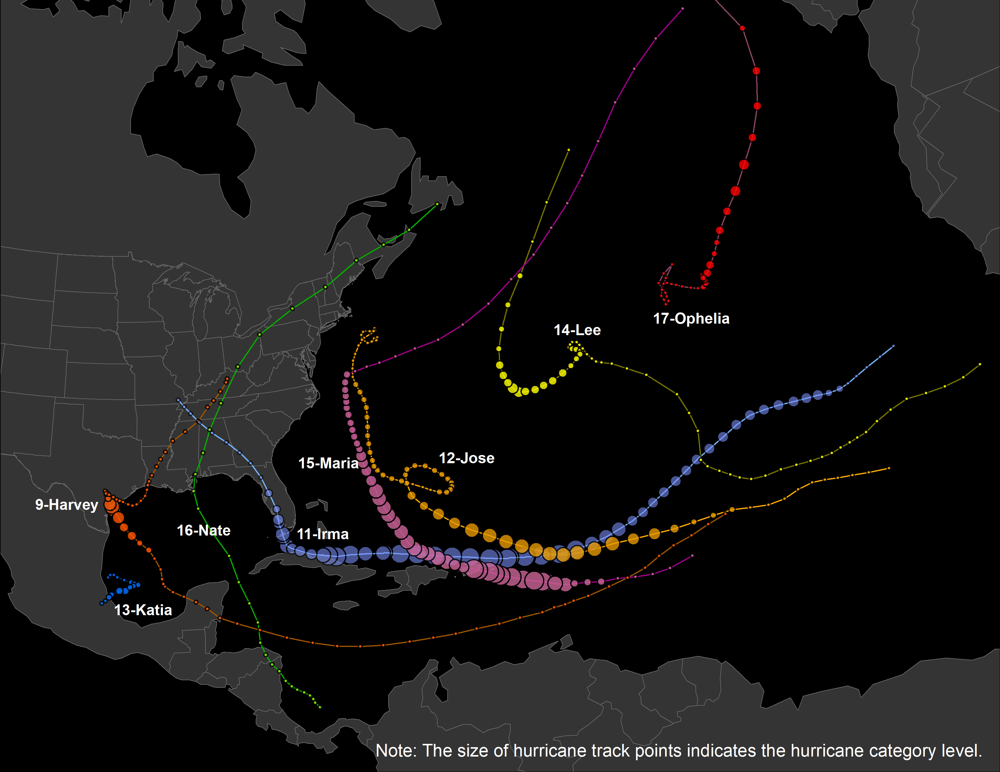

The Hurricane Story:
Examining Spatiotemporal Pattern of Twitter Trajectory in 2017 Atlantic Hurricane Season
There is an increasing risk of tropical cyclones recent years causing a large amount of loss of assets. However, the fatalities are relatively low because of effective protective actions such as getting sheltered and evacuated. A more comprehensive understanding of the evacuation behaviors will benefit the management greatly.
Post-event survey is the traditional practice to collect the information of evacuation behaviors with limitation of high cost and low efficiency, while user-generated social media data provides great potentials to better understand and detect the spatiotemporal pattern of the evacuation behaviors during hurricane seasons.
Using the 2017 Atlantic Hurricane Season as a study case, we mainly focus on two hurricanes: 1) The NO.9 Hurricane - Harvey, which is tied with 2005's Hurricane Katrina as the costliest tropical cyclone on record, inflicting $125 billion in damage, primarily from catastrophic rainfall-triggered flooding in the Houston metropolitan area and Southeast Texas; 2) The NO.11 Hurricane - Irma, which is the strongest observed in the Atlantic in terms of maximum sustained winds since Wilma, and the strongest storm on record to exist in the open Atlantic region. The following map shows their moving tracks:

Based on Twitter data collected with keywords during 2017 Atlantic Hurricane Season, filtering out the unrelated tweets (e.g. entirely out of the U.S), non-humman users (e.g. public media and bots) as well as invalid trajectories (i.e. moving faster than plane), we generate the evacuation trajectories of valid twitter users and visualize the movement path. In the following interative map, the color of trajectories shows time range: The order of Red-Yellow-Blue indicates the date in August-September-October 2017.
After exploring the map, we can easily notice the two biggest clusters, which are the red trajectories around Houston area (showing people's evacuating routes during Hurricane Harvey in August 2017) and the yellow ones along with Florida (showing the evacuating routes during Hurricane Irma in September 2017).
To better understand the moving pattern, we will further compare where people are moving from, and where are people moving to. Inspired by the wind-rose graph in atmospheric science, we made these charts in which the moving angle/directoin are excatly the same, but the distances are cut down proportionally.
We make all these wind-rose charts by state, and allocate them at the centroid of each corresponding state. The first/left map shows the origin (beginning location) of each trajectory by state, and the second map shows the destination (ending location) of trajectory. Same as before, the color here shows the time range.
It is fun to play with the switch and compare the difference. As for the origins (left map), a large group of people were traveling from Texas towards northeast, west and even southeast; a lot of people were traveling from Florida to the north and north west, which clearly shows where people were moving towards, during Hurricane Harvey and Irma. As for the destinations (right map), California is obviously the most welcome target, and the northeast also accepted many evacuees.
Further spatiotemporal analytics and visualizations are expected to come soon!
Design & Cartography by Chenxiao (Atlas) Guo, December 2018